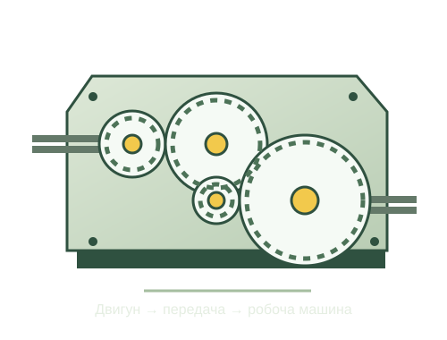

Про проєкт
Засновник
- Ломакін В. О., к. т. н.
Автори
Учасники розроблення (contributors)
Заклад освіти: Житомирський агротехнічний фаховий коледж
Список доповнюється.
Допомога ШІ: підготовка текстів, переклад, допомога з програмуванням і перевірки (моделі родини GPT-6).
© 2026 Автори проєкту.
Технічна механіка
Проєктний розрахунок
механічного привода
Від завдання й вибору передач — до навантажень, перевірки деталей та власного обґрунтування.

Режим перегляду. Будь ласка, увійдіть, щоб змінювати дані та створювати або завантажувати PDF.
Завантаження навчального розрахунку…
Збереження та відкриття проєкту
JSON зберігає вихідні дані та обґрунтування. Після відкриття результати перераховуються.
Перевірений приклад — циліндричний редуктор із вибраною гнучкою передачею. Поточний варіант спершу завантажиться як резервний JSON.
Послідовність змін і повторних перевірок буде показано в розділі 11 перед прийняттям.
Технічний звіт
Експорт містить вихідні дані, пояснення величин, пронумеровані формули, числові підстановки, перевірки та векторні рисунки поточного варіанта.
Після підготовки відкриється діалог друку. Виберіть «Зберегти як PDF».